完整 14 步掌握 Graph Engineering
Claude Code dynamic workflow 完整方法论 · 8 段可复制 prompt
0xCodez 把多步 agent 从「一条直线」画成「一张图」的完整路线图。原文 14 步逐节拆解 + 6 个本周可做的 graph 实战 + 8 段可直接复制的 prompt 卡片（支持 EN/CN 切换 + 一键 Copy），配 16 张原文图按位置完整保留。
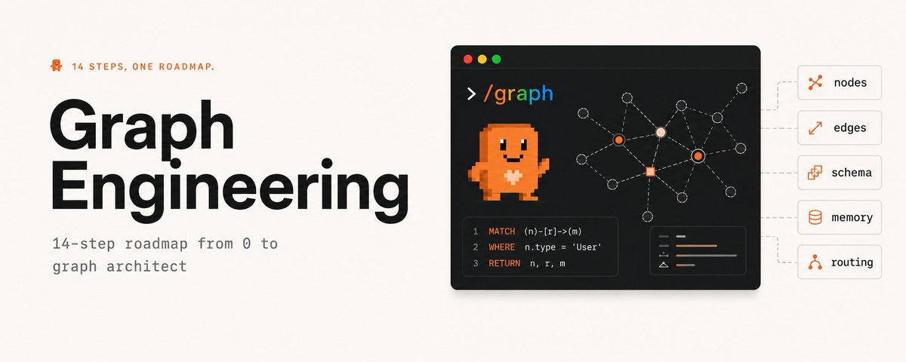
原文封面 · Graph Engineering with Claude · 0xCodez (@0xCodez) · 2026/07/20
大多数人试着搭一个多步 agent，最后搭出来的是一条直线。第一步、第二步、第三步——每一步都乖乖等上一步做完才肯开始。
10 个人里有 9 个会注意到：那些步骤里有一半根本不需要等。
它们不绕路、不分叉、不并行。只是排队——一个头、一份上下文、一次干一件事，直到窗口塞满，agent 忘了自己在干什么。
这篇文章要做的事，是把那条单文件直线改画成一张图：一队 subagent 同时往外扩，自己验证自己的发现，最后汇合成一个单 agent 永远拿不出的结果。
一个 prompt 是一句话，一个 loop 是一圈循环，
一个 harness 是 agent 脚下那块地板——
但工作本身的形状，是一张图。
— 0xCodez · Graph Engineering with Claude
The shape of work is a graph
这节开门见山：大多数人没讲明白的一个转变。prompt 是一句话，loop 是一圈循环，harness 是 agent 脚下那块地板。
但工作本身——什么先跑、什么能同时跑、什么必须等其他都跑完——这种形状，是一张图。节点做活，边搬结果。
Claude Code 把搭这种图的工具直接做出来了：dynamic workflows。Claude 写一份普通的 JavaScript 编排脚本，然后拉起一支配合的 subagent 队伍去执行——而协调本身不花一个 model token，因为它是代码，不是对话。
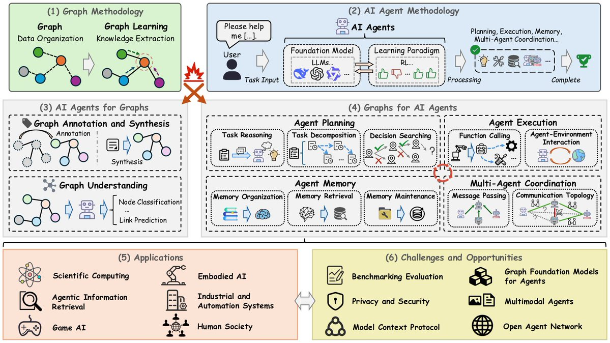
原文配图 · Graph 引入 · 0xCodez (@0xCodez) · 2026/07/20
Nodes are jobs. Edges are what flows.
一张图只由两样东西组成，把它们想清楚就解决了大部分混乱。节点是一份工作——一个 agent、一件有边界的活、一个进一个出。
边是一条依赖：它说这个节点的输出喂给那个节点的输入。就这些。
常犯的错是把「然后」当成一条边。「把这个文件总结一下，然后告诉我天气」——这两件事之间没有边，天气并不消费总结。
这是两个断开的节点，被一段线性脚本硬连在一起。只有当数据真的流过一条边时，那条边才存在。
养成一个习惯：你 agent 里每出现一个「然后」，就问一句——下一步读不读上一步的输出？不读，那就没边，等就是白等。
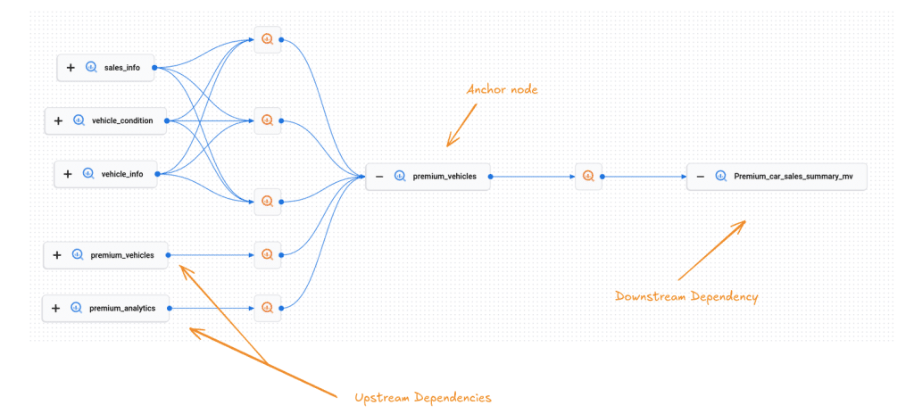
原文配图 · 节点与边 · 0xCodez (@0xCodez) · 2026/07/20
Draw it as boxes and arrows. A box is an agent() call. An arrow is a variable passed from one call's return into another's prompt. If you can't draw the arrow - if no variable crosses - the two boxes are independent, and independence is the thing you'll exploit for the rest of this course.
把它画成方块和箭头。一个方块就是一个 agent() 调用。 一根箭头就是一个变量，从上一次调用的返回值传到下一次的 prompt 里。 如果箭头画不出来——也就是没有变量流过——那这两个方块就是独立的， 而「独立」正是这门课后面你要一直利用的东西。
Your linear script is a degenerate graph
当你把一个 agent 写成「先做 A，再做 B，再做 C，再做 D」的时候，你画出来的是一张图——一条不分支的链。每个节点恰好一条入边、一条出边。
它能跑。跑得也慢，也脆，因为一条链没有冗余：C 一卡，D 永远不发生，A 的成果全卡在上游哪也去不了。
graph 工程的第一个真功夫，是把链条重画。拿出你的线性 agent，对每一根箭头问 Step 1 那个问题。
大多数链里有两三根箭头根本不搬数据——它们只是你打字时碰巧排的顺序。砍掉这几根箭头，链条立刻塌成一个更宽的形状：几个互相独立的节点可以同时跑，把结果喂给一个需要全集的节点。
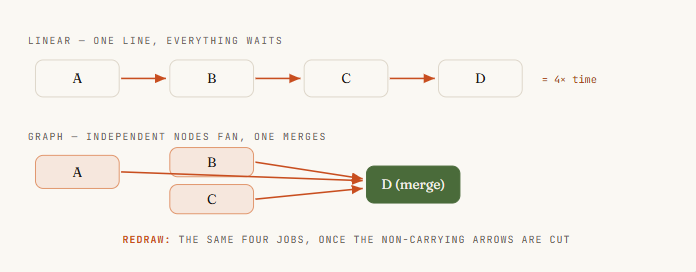
原文配图 · 线性 vs 图 · 0xCodez (@0xCodez) · 2026/07/20
Give every node a contract
一个你说不清的节点，就是一个你并行不了的节点。解法是合同：输入有界、输出有形、活只干一件。
输入是这个节点要读的——显式传进来，永远不要假设来自某个共享窗口。输出是一个定义好的形状，最好带校验，这样下个节点能不用猜地消化它。
在 workflow 里，这份合同是用 schema 强制执行的。当你给 Claude 一个 agent() 调用并附上 JSON schema，Claude 派生出的 subagent 必须返回校验过的结构化数据——校验发生在 tool-call 层，不匹配 Claude 会重试，而不是甩给你一段要靠祈祷解析的自由文本。
这就是「一个 Claude 能接进图里的节点」和「只有人能读懂输出的节点」之间的差别。
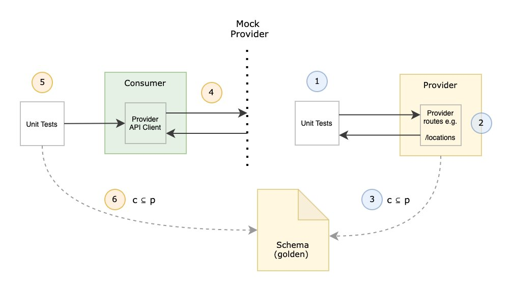
原文配图 · 节点合同 · 0xCodez (@0xCodez) · 2026/07/20
// A node with a real contract: bounded in, validated out, one job.
const ITEM = {
type: 'object', additionalProperties: false,
properties: {
title: { type: 'string' },
url: { type: 'string' },
impact: { type: 'string', enum: ['high', 'medium', 'low'] },
},
required: ['title', 'url', 'impact'],
};
const result = await agent(source.prompt, {
label: `research:${source.key}`,
schema: ITEM, // forces validated structured output
agentType: 'general-purpose',
});
// result is now a shape the next node can trust — not free text.
// 一个有真实合同的节点：输入有界、输出有校验、只干一件事。
const ITEM = {
type: 'object', additionalProperties: false, // 禁止额外字段
properties: {
title: { type: 'string' }, // 标题，字符串
url: { type: 'string' }, // 链接，字符串
impact: { type: 'string', enum: ['high', 'medium', 'low'] }, // 影响等级：高/中/低
},
required: ['title', 'url', 'impact'], // 这三个字段必填
};
const result = await agent(source.prompt, {
label: `research:${source.key}`, // 节点的标签（用于日志/状态显示）
schema: ITEM, // 强制按上面 schema 返回 JSON，不匹配会重试
agentType: 'general-purpose', // 通用型 subagent
});
// result 现在是一个下个节点可以信任的形状——不再是自由文本。
Treat the edge as a data contract
一条边不只是「B 在 A 之后」。它是一条承诺，承诺 A 产出这个形状，B 被造来消化这个形状。当你按数据——而不是按顺序——来命名边，两件事会立刻变简单。
你能瞬间看出这条边是不是真的（数据真的流过吗），你也能在形状不变的前提下替换任意一端的节点。
实操里，边就藏在普通 JavaScript 里。fan-out 和综合之间的 reduce 步——摊平、去重、过滤——就是代码在操作你那些节点返回的形状。
不需要 agent。graph 思维里一个安静的胜场：人们用 model token 烧出来的好多事，其实就是一条边，而边是免费的。
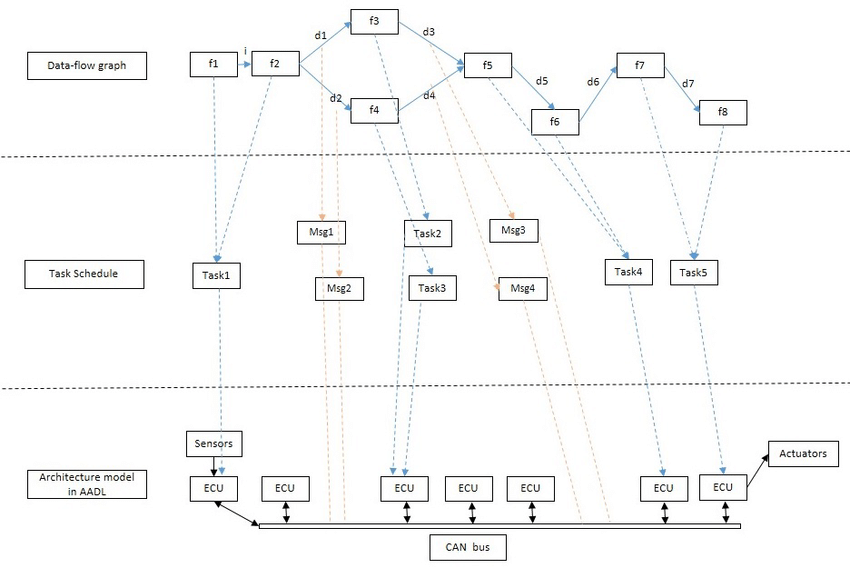
原文配图 · 边合同 · 0xCodez (@0xCodez) · 2026/07/20
The temptation is to spawn an agent to "combine the results." Resist it. If combining means flatten-and-dedupe, that's results.flatMap(...) and a Set — deterministic, instant, zero tokens. Save agents for judgment, not for plumbing. A graph where every edge is an agent is a graph paying rent on its own wiring.
诱惑是再开一个 agent 去"合并结果"。忍住。 如果合并就是「摊平 + 去重」，那就是 results.flatMap(...) 加上一个 Set ——确定性、瞬间、零 token。把 agent 留给需要判断的地方， 不要拿来跑管道。一张图里如果每条边都是 agent，那是在给自己布线交租。
Fan out with parallel()
这一招是后面所有收益的来源。当你手头有 N 个互相独立的节点——N 个要查的来源、N 个要审的文件、N 个要盘的路由——你不会把它们串起来。
你会让 Claude 把它们扇出去同时跑。在 workflow 里这就是 parallel()：Claude 拿一组 thunk，给每个 thunk 派生一个 subagent，全部并发执行，然后把结果数组交还给你。
有两个细节让它鲁棒。第一，parallel() 是个 barrier，它会等所有 thunk 都返回，下一阶段才看到完整结果集。第二，抛错的 thunk 解析成 null 而不是 reject 整批，所以一个抽风的 agent 不会拖死整轮。
永远 .filter(Boolean) 一下结果。并发被你的核数封顶，多余的排队，所以你扔 100 个 thunk 也跑得完——只是同时只跑一小撮。
扇出发生在 Claude 写的代码里，不在模型对话里。Claude 自己的上下文一次不会塞 9 个来源——每个 subagent 各自背一份，只有最终答案回来。
这就是为什么 Claude 能把一个 workflow 扩到几十甚至几百个 subagent 而不会淹死整次会话。编排层零 token，因为它不是 Claude 又一轮思考。
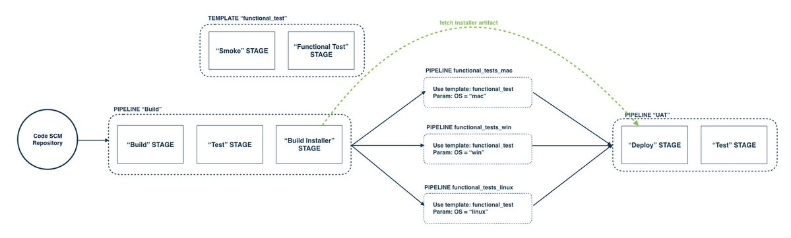
原文配图 · 扇出 · 0xCodez (@0xCodez) · 2026/07/20
phase('Research');
// Nine sources, nine agents, all at once.
const raw = await parallel(
SOURCES.map((s) => () =>
agent(s.prompt, {
label: `research:${s.key}`,
phase: 'Research',
schema: ITEM_SCHEMA, // each node returns validated JSON
agentType: 'general-purpose',
}),
),
);
const collected = raw.filter(Boolean); // drop the nulls from failed agents
phase('Research'); // 标记阶段：研究（用于日志/状态显示）
// 九个数据源，九个 agent，全部同时跑。
const raw = await parallel(
SOURCES.map((s) => () => // 把每个数据源包成 thunk（懒执行的函数）
agent(s.prompt, { // 调起一个 subagent
label: `research:${s.key}`, // 标签：研究·数据源 key
phase: 'Research', // 阶段：研究
schema: ITEM_SCHEMA, // 返回的 JSON 形状要和这个 schema 对齐
agentType: 'general-purpose', // 用通用型 subagent
}),
),
);
const collected = raw.filter(Boolean); // 过滤掉 null（失败的 agent 会解析成 null）
Fan in at a barrier
扇出只有在有东西把它接住时才有意义。扇入就是让边汇聚的节点——一个 agent（或一段代码）一次看到所有上游结果，然后做需要全集才能做的事：跨来源去重、按影响排序、若整批为空就早退。这是 barrier 唯一值得花时间的地方。
让图跑得快的规则：只在某个阶段真的需要所有先前结果合在一起时，才用 barrier。跨来源去重？用 barrier——对。只摊平一个列表？那是边，内联做。
有个简单粗暴的嗅探测试：你写的是 parallel → transform → parallel，如果中间那段 transform 没有跨项依赖，那你应该直接用 pipeline 把 barrier 整个跳过。
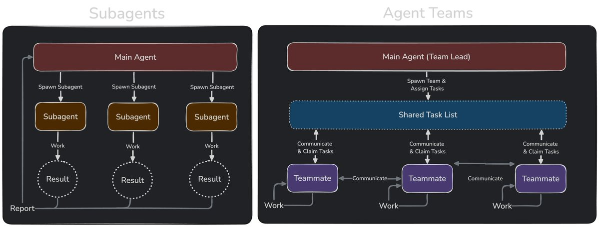
原文配图 · 扇入 · 0xCodez (@0xCodez) · 2026/07/20
// The edge: plain JS, no agent, zero tokens.
const flat = collected.flatMap((c) => c.items);
log(`Collected ${flat.length} items`);
phase('Curate');
// The barrier node: needs the WHOLE set to dedupe + rank.
const curated = await agent(
`Dedupe and rank these by impact:\n${JSON.stringify(flat)}`,
{ phase: 'Curate', schema: CURATED_SCHEMA },
);
// 这条边：纯 JS，不要 agent，零 token。
const flat = collected.flatMap((c) => c.items); // 摊平：每个 source 的 items 数组合成一个
log(`Collected ${flat.length} items`); // 打日志：总共 N 条
phase('Curate'); // 阶段切换：精选
// 屏障节点：需要拿到全集才能去重 + 排序。
const curated = await agent(
`Dedupe and rank these by impact:\n${JSON.stringify(flat)}`, // 告诉 agent 去重并按影响排
{ phase: 'Curate', schema: CURATED_SCHEMA }, // 返回结构化结果
);
The diamond: split → work → merge
把扇出和扇入拼起来，你就得到每张严肃 agent 图背后的主力拓扑：钻石。
一个节点把活拆开，许多节点并行去干，一个节点再合起来。竞品扫描、依赖审计、code review、调研报告——背后都是它；换掉数据源和 prompt，同一副骨架照样能套。
这个典型形态有个值得记住的名字：fan out → reduce → synthesize。扇出去拿广度，用普通代码 reduce 把它压紧，最后让一个 agent 来 synthesize 写答案。
一旦你能看见钻石，你就不会再问「怎么让我的 agent 多干几步」，你会开始问「拆在哪、合在哪」——这才是真正能扩展的问题。
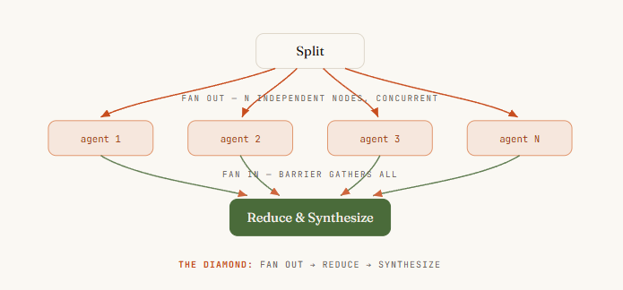
原文配图 · 钻石模式 · 0xCodez (@0xCodez) · 2026/07/20
Route the edge at runtime with a conditional
不是每张图都是固定的。有时候该走哪条边，取决于某个节点发现了什么。router 节点会检查一个结果，然后决定哪条下游路径被触发——给工单分类，然后分支到对应 handler；看一下 diff 大小，决定要么快速过一遍，要么开一次完整审计。
在 workflow 里这就是对节点校验后的输出做一句 JavaScript if 或 switch，因为控制流住在代码里。
这是确定性从限制变成特性的地方。router 的判断可以由 Claude 驱动（一个 subagent 做分类），但路由是 Claude 写的代码——所以同一份分类，每次都按同一条路走。
你在节点拿到 Claude 的判断，在边上拿到脚本的可靠。不会有「Claude 决定跳过审计」这种意外——因为跳过要写进图里才能发生，而它没写。
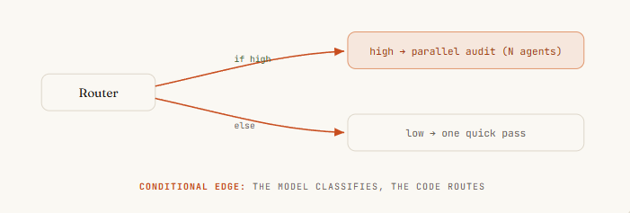
原文配图 · 运行时路由 · 0xCodez (@0xCodez) · 2026/07/20
// Router node: an agent classifies, code picks the edge.
const { severity } = await agent(
`Classify this diff's risk:\n${diff}`,
{ schema: { type: 'object',
properties: { severity: { enum: ['low', 'high'] } },
required: ['severity'] } },
);
let review;
if (severity === 'high') {
// heavy path: full parallel audit
review = await parallel(FILES.map((f) => () => agent(`Audit ${f}`)));
} else {
// light path: one quick pass
review = await agent(`Quick review of ${diff}`);
}
// 路由节点：让 agent 做分类，代码决定走哪条边。
const { severity } = await agent(
`Classify this diff's risk:\n${diff}`, // 问 agent：这次改动风险多大？
{ schema: { type: 'object',
properties: { severity: { enum: ['low', 'high'] } }, // 只允许 low / high
required: ['severity'] } },
);
// 上面 await 的解构里，severity 就是 agent 给出的分类
let review;
if (severity === 'high') {
// 重路径：完整的并行审计
review = await parallel(FILES.map((f) => () => agent(`Audit ${f}`)));
} else {
// 轻路径：一次快速过
review = await agent(`Quick review of ${diff}`);
}
Put a verifier on the edge
图真正的杠杆不是更多 agent——而是那种能搭在 agent 周围、产出信心的结构。
verifier 节点守在边上游，它唯一的活就是试着推翻这个发现。活下来才放行，没活下来就根本到不了答案。
三种验证模式值得常备：
- 对抗式验证（Adversarial verify）：对每条发现，派生 N 个互相独立的怀疑者去反驳它；过半活下来才留。
- 视角多样化验证（Perspective-diverse verify）：给每个验证器一个不同的视角——正确性、安全性、能否复现——因为多样化能抓到 N 个一模一样的检查永远抓不到的失败模式。
- 评审团（Judge panel）：从不同角度生成 N 个尝试，用一组并行评审打分，从赢家综合，同时把亚军最好的部分嫁接过来。
这正是某团队把 Bun 运行时移植过去时用的那个模式——把对抗式 code review 烤进了循环里。
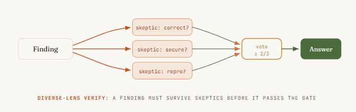
原文配图 · 验证器 · 0xCodez (@0xCodez) · 2026/07/20
Isolate nodes so one failure can't poison the graph
在一条链上，失败会传染——C 一死 D 就不跑，整条停下来。在图上，失败要被困在它那个节点里。
这一点已经半自动实现了：parallel() 里抛错的 thunk 解析成 null，所以八个好 agent 仍然交回结果，一个坏的悄悄掉队。你的 .filter(Boolean) 就是那道围栏。
设计每个 fan-in 时，让它能容忍缺输入，别假设永远拿满。
更隐蔽的失败是节点互相踩脚。agent 并行写文件时，它们会撞车。
解法是隔离：worktree——每个 agent 跑在它自己的 git worktree 里，在沙箱里干活，干净地合并。只有当节点真的并行写时才用——这是那道需要它的拓扑的安全带，不是每轮都交的税。
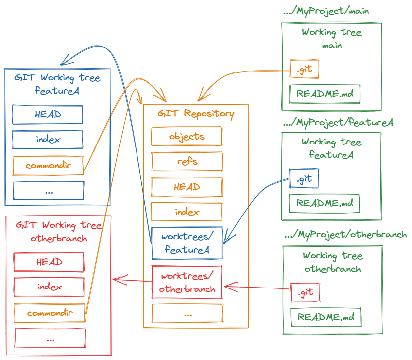
原文配图 · 节点隔离 · 0xCodez (@0xCodez) · 2026/07/20
Add a cycle - but make it converge
有时候你得跑进活里才知道它多大：未知规模的探索，找一个 bug 反而暴露出三个的那种活。这就需要一个循环——一条受控的边回到更早的节点。
危险是显然的：不收敛的循环就是无限定派生 agent，直到预算烧光。
能收敛的形态叫 loop-until-dry：一直派生 finder，直到连续 K 轮没新东西浮出来，然后停。让它成或败的那一个细节——也是几乎所有人第一次都栽的那个——是你拿什么去重。
对所有见过的去重，而不是对确认过的去重。否则被拒的发现每轮都会重新出现，循环永远跑不干，你就造了一台专门付费去重新发现同一条死胡同的机器。
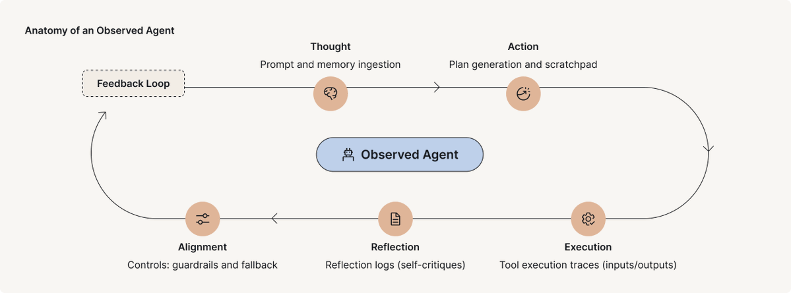
原文配图 · 循环收敛 · 0xCodez (@0xCodez) · 2026/07/20
const seen = new Set(); const confirmed = []; let dry = 0;
while (dry < 2) { // stop after 2 empty rounds
const found = (await parallel(
FINDERS.map((f) => () => agent(f.prompt, { schema: BUGS }))
)).filter(Boolean).flatMap((r) => r.bugs);
const fresh = found.filter((b) => !seen.has(key(b)));
if (!fresh.length) { dry++; continue; } // nothing new → toward dry
dry = 0;
fresh.forEach((b) => seen.add(key(b))); // dedupe vs SEEN, not confirmed
// diverse-lens verify each fresh finding before it counts
const judged = await parallel(fresh.map((b) => () =>
parallel(['correctness', 'security', 'repro'].map((lens) => () =>
agent(`Judge "${b.desc}" via ${lens} — real?`, { schema: VERDICT })))
.then((v) => ({ b, real: v.filter(Boolean).filter((x) => x.real).length >= 2 }))));
confirmed.push(...judged.filter((v) => v.real).map((v) => v.b));
}
const seen = new Set(); // 记录所有已见过的 bug key
const confirmed = []; // 真正被确认的 bug
let dry = 0; // 连续空轮数
while (dry < 2) { // 连续 2 轮没有新发现就停
// 并行跑所有"找 bug"的 finder
const found = (await parallel(
FINDERS.map((f) => () => agent(f.prompt, { schema: BUGS })) // 每个 finder 调一个 agent
)).filter(Boolean) // 丢掉 null（失败的 agent）
.flatMap((r) => r.bugs); // 把每个结果里的 bugs 摊平成一个数组
const fresh = found.filter((b) => !seen.has(key(b))); // 找出这次新出现的 bug
if (!fresh.length) { dry++; continue; } // 没新的，dry 计数 +1，下一轮
dry = 0; // 有新的，dry 归零
fresh.forEach((b) => seen.add(key(b))); // 把新 bug 全部加进 seen
// 多视角验证：每个新 bug 用三个不同角度去审
const judged = await parallel(fresh.map((b) => () =>
parallel(['correctness', 'security', 'repro'].map((lens) => () =>
// 问 agent：用"正确性 / 安全性 / 可复现"这个角度判断这个 bug 是不是真的
agent(`Judge "${b.desc}" via ${lens} — real?`, { schema: VERDICT })))
// 三个视角里至少 2 个说"真"，才算这个 bug 真的
.then((v) => ({ b, real: v.filter(Boolean).filter((x) => x.real).length >= 2 }))));
confirmed.push(...judged.filter((v) => v.real).map((v) => v.b)); // 收下真 bug
}
Tier the models across the nodes
不是每个节点都需要你最好的模型。图把这件事说得很明白，单 agent 永远不会：有些节点是有限且重复的（抽这个字段、给这个工单分类），有些节点装的是真判断（综合一份报告、裁定一条发现）。
把无聊的节点扔到更便宜的模型上，把贵 token 留给真住着判断的地方。
在 workflow 里，每个 Claude 派生的 subagent 默认继承你这次会话的模型——所以默认情况下，一次大跑全程按你这一档收费。agent() 调用上的 model 选项告诉 Claude 把那个节点路由到别处。
大跑之前先 /model 看一下，然后让 Claude 把 fan-out 里那些重复的节点降到便宜模型，把 merge 节点留在顶上。这根杠杆能把一张费 token 的图变成省 token 的图，形状不用动。
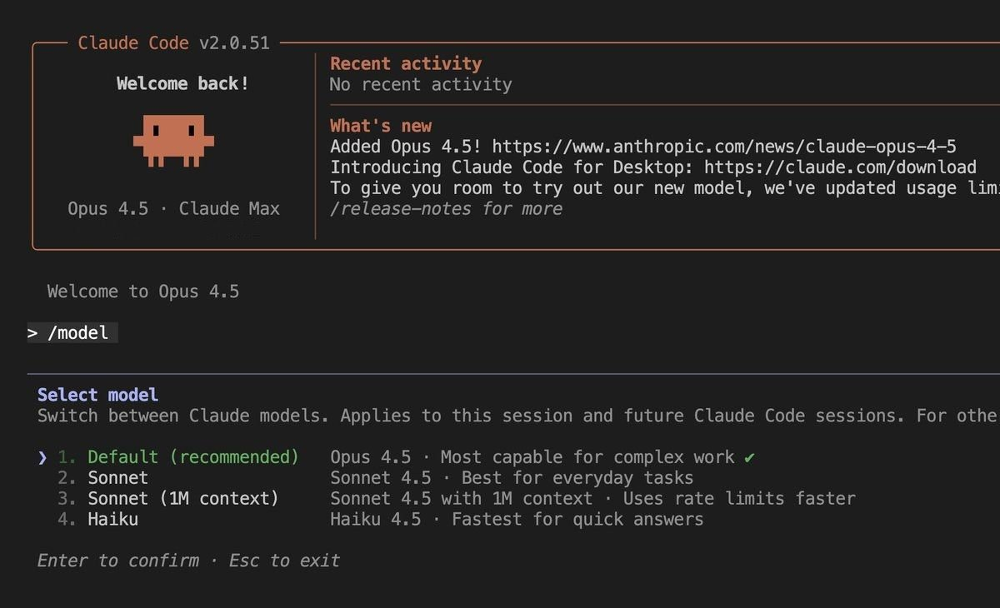
原文配图 · 模型分档 · 0xCodez (@0xCodez) · 2026/07/20
Topology is your cost and latency
图的形状不是装饰——它是单根最大的实际时间杠杆。最容易绊倒每个人的选择：parallel() 还是 pipeline()。一个 parallel() barrier 会让所有事等最慢的那个节点，然后下一阶段才开始。
一个 pipeline() 把每条数据独立地流过所有阶段，没有 barrier——A 已经在第 3 阶段的时候 B 还在第 1 阶段。快的活先完，不会被慢的堵在后面。
默认用 pipeline。只有当某阶段真的需要把前面所有结果凑一起时才上 barrier——跨集合去重、对整批做早退、把 prompt 拿来跟「别的发现」比。「代码更干净」「阶段感更分明」不算理由，barrier 的延迟是真金白银的浪费。分开 ≠ 同步。
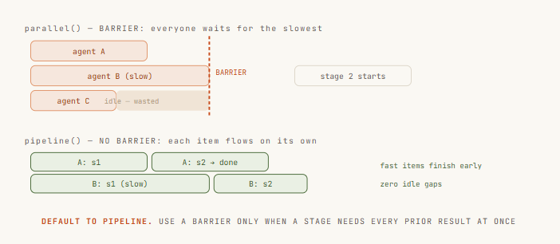
原文配图 · 拓扑与延迟 · 0xCodez (@0xCodez) · 2026/07/20
Let Claude draw the graph - self-routing
最后一步是别再给那些你事先规划不出来的活手动画图了。
有了 dynamic workflows，你描述目标，Claude 自己去写编排脚本——把任务拆开、选好 fan-out、派生一队配合的 subagent、综合出结果。你拿到的是一张为这次跑量身定制的图，不再是你希望它能套上的那张固定图。
三条路可以走进来：
- 在 prompt 里说「workflow」这个词，Claude 就会给这个任务写一个 workflow。
- 跑一份已经存好或打包好的——/deep-research 是一张在生产环境里跑的图：scope → 并行搜 → 抓 → 对抗式验证 → 综合，正是这门课的骨架。
- 打开 ultracode，Claude 会给会话里每一件正经事规划一个 workflow。跑得好的时候，按 s 把那份脚本存进 .claude/workflows/——版本可控、按名字可重跑，任何 clone 这个 repo 的人都能 launch 它。
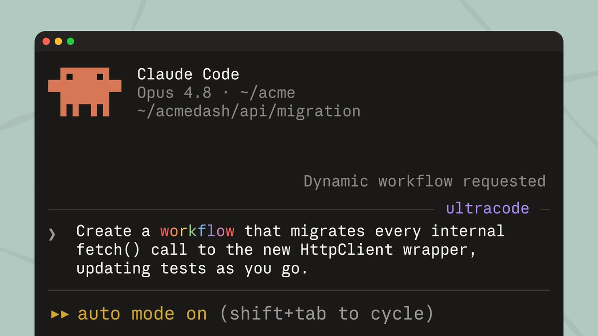
原文配图 · 让 Claude 自己画图 · 0xCodez (@0xCodez) · 2026/07/20
› Run a workflow to audit every route under src/routes/ for missing auth. Spawn one agent per route file, then verify each finding before reporting. ● Claude wrote an orchestration script · launching in background… /workflows — auth-audit · running ✓ Scope 1/1 2.1k tok · 4s ✓ Fan-out 18/18 one agent per route file ◯ Verify 11/18 3-vote skeptics per finding… ○ Synthesize 0/1 waiting on verify session stays responsive — keep working while the fleet runs
› 跑一个 workflow：审计 src/routes/ 下每个路由文件，查找缺失的鉴权。 每个路由文件派一个 agent，找到的结果在写进报告前先做验证。 ● Claude 写好了一份编排脚本 · 正在后台启动… /workflows — auth-audit · 运行中 ✓ Scope 范围 1/1 2.1k tok · 4s ✓ Fan-out 扇出 18/18 每个路由文件一个 agent ◯ Verify 验证 11/18 每个发现 3 票怀疑者… ○ Synthesize 综合 0/1 等待 verify 完成 会话保持响应——整个车队在跑时你还能继续干活
Six graphs to build with Claude this week
- 全路由安全扫描。Claude 给每个路由文件派一个 subagent，每个都去找漏掉的鉴权检查，然后再来一遍 verifier 确认每条发现才让它进报告。宽度是单个上下文永远兜不住的。
- 带引用的报告，用 /deep-research。一张已经在 Claude Code 里出货的图。Claude 把你的问题拆成不同角度，并行搜索，去重数据源，然后每个论断都用三票怀疑者做对抗式验证，再写。
- 把一个模块一文件一文件地移植过去。Bun 的天花板，scale 到你自家仓库。Claude 把翻译扇出到每个文件，每次拿测试套件当 gate 跑一遍，把失败的 loop 回去——对抗式审 review 把单遍会漏的东西抓出来。
- 对 diff 做对抗式 review。Claude 按 diff 大小路由：小改动走一次快审，大的触发完整并行审计，多个 reviewer 各持一个视角——正确性、安全性、性能——然后评审团综合。
- 定时跑生态扫描。存一次，永远能重跑。Claude 并行看多个源——发布、博客、讨论——在 barrier 处按影响排序，再写摘要。版本控在 .claude/workflows/，按名字 launch。
- 未知规模的发现。你不知道有几个 bug。Claude 并行跑 finder，把每个新发现对所有见过的去重，验证活下来的，循环到连续两轮空才停。
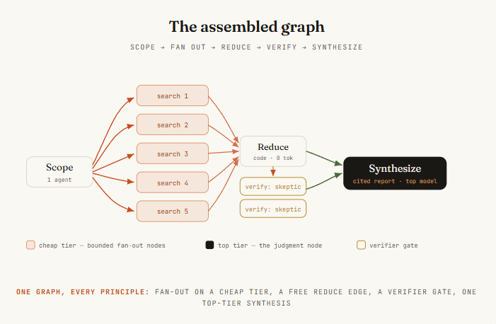
原文配图 · 6 个 graph 实战 · 0xCodez (@0xCodez) · 2026/07/20
A prompter asks a question. An architect draws a graph.
提问的人问问题。architect 画图。
那条线性 agent 一直不是天花板——它只是第一个形状，是大家最先摸到的那一个，因为最像我们打字的顺序。一行、一个头、一次干一件事。
一旦你能看见节点和边，你就不会再让 agent 做更多，你会让图做得更宽：活独立的地方扇出去，要信心的地方给边上锁，要判断的地方把模型分档。
大多数人还会继续把步骤排成一条线。学会画图的那些人，会跑起一整支车队——而其他人卡着的那道天花板，他们压根不会注意到。
SOURCES & CREDITS
引用与原文出处
-
ORIGINAL ARTICLE
Graph Engineering with Claude: 14-Step roadmap from 0 to graph architect (Full Course)
作者：0xCodez (@0xCodez) · 发布于 2026/07/20 · 2,639,049 浏览 · 2,707 赞 · 8,254 收藏 · 526 转推
推文链接：https://x.com/0xCodez/status/2079165300625330317
文章链接：https://x.com/i/article/2079141496981184512 - AUTHOR · X https://x.com/0xCodez
- AUTHOR · SUBSTACK https://substack.com/@0xmovez — 0xCodez 的 newsletter「AI insights from 2030」
-
INTERPRETATION
本文为完整解读版本。按原文 14 步顺序逐节翻译整理，每节顶部加一句中文核心原则（金句框）便于抓重点。原文 16 张配图按位置完整保留并下载到
images/2026-07-25-0xcodez-graph-engineering-14-steps/。原文 8 段核心代码全部做成双语 prompt 卡片（EN/CN 切换 + 一键 Copy），中文意译保留所有变量名/API 名，注释逐行翻译。如需引用请以原文为准。
提一个问题的人只是用户，画一张图的人才是 architect。同一个 agent，跑在线上是「排了三步等三步」，跑在图上是「九个人同时挖再合」。形状一变，上限就变了。
提问的人问问题。
architect 画图。
— 0xCodez · Graph Engineering with Claude